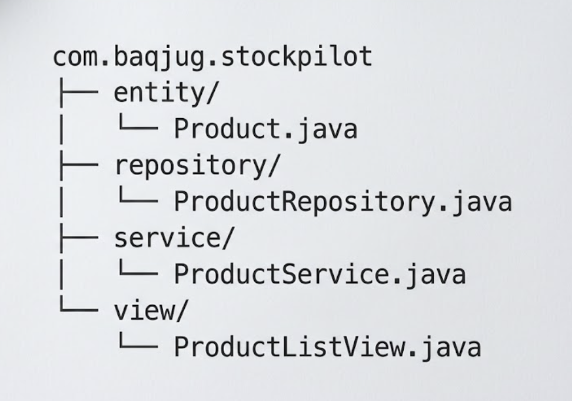
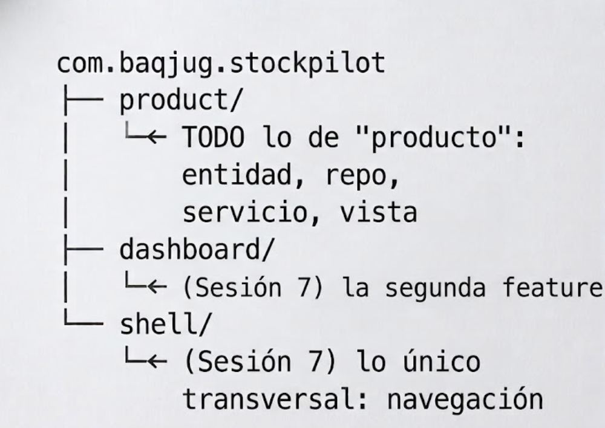
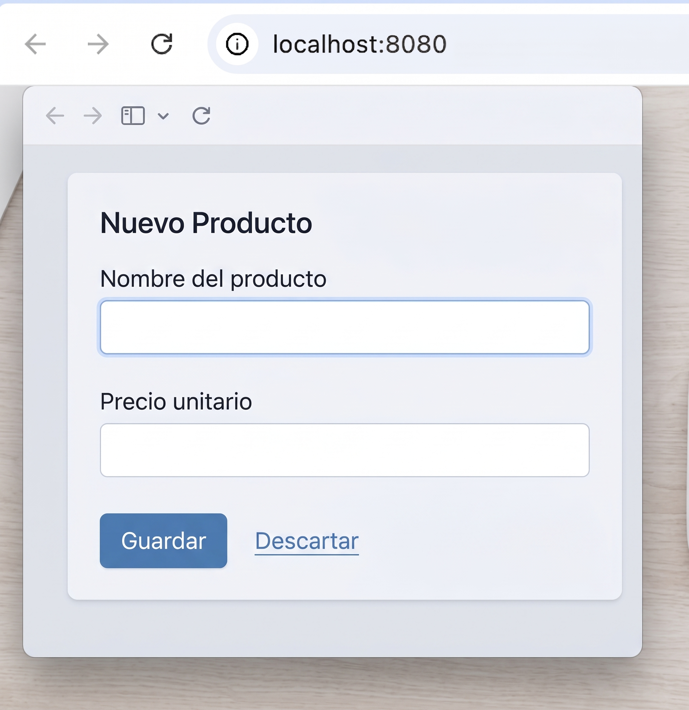

Sesión 1: El proyecto y package-by-feature¶
Rama: sesion-1
Lo que vas a lograr: el proyecto stockpilot generado y corriendo,
organizado con package-by-feature desde el primer archivo, y tus primeros
componentes de Vaadin en pantalla.
Parte 1: Generar el proyecto con start.vaadin.com¶
A diferencia de un proyecto Spring Boot cualquiera, para Vaadin conviene arrancar desde el asistente propio del framework: https://start.vaadin.com. Ya viene con el BOM de Vaadin, el plugin de Maven y una vista de ejemplo configurados: te ahorra la parte más propensa a errores de versión.
Completa:
| Campo | Valor |
|---|---|
| Framework | Flow (no Hilla, que es para UIs en React con endpoints TypeScript; nosotros queremos Java puro de punta a punta) |
| Application name | stockpilot |
| Technology stack | Spring Boot |
| Language | Java |
| Build tool | Maven |
| Group ID | com.baqjug.stockpilot |
| Version de Vaadin | 25.2.6 (o la 25.x estable más reciente) |
| Java version | 25 |
Elige la plantilla "Empty" (o "Plain Java") en vez de alguna de las plantillas con ejemplos de negocio: vamos a construir todo nosotros, capa por capa, y no queremos código de muestra estorbando.
Descarga el .zip, descomprímelo dentro de tu carpeta de repo, y ábrelo en
tu IDE:
La primera vez que abres el proyecto, Maven descarga las dependencias y Vaadin prepara su frontend interno (aunque nunca vayas a tocarlo a mano). Espera a que termine antes de seguir.
¿Por qué no Spring Initializr?
Podrías arrancar en start.spring.io y agregar Vaadin como dependencia a mano (así se hace cuando Vaadin se suma a un proyecto Spring que ya existe). Para un proyecto que nace siendo una app Vaadin, start.vaadin.com te ahorra fijar a mano la versión del BOM y del plugin de Maven, que tienen que coincidir entre sí.
Parte 2: Por qué package-by-feature¶
Antes de escribir la primera vista, tomemos una decisión de arquitectura que va a acompañar todo el proyecto: cómo organizamos los paquetes.
Si abres el proyecto que acabas de generar, vas a ver que viene casi
vacío: un único paquete com.baqjug.stockpilot, con la clase
Application.java adentro y nada más. La plantilla no te impone ninguna
arquitectura interna: esa decisión queda en tus manos, y la vamos a tomar
ahora, antes de escribir la primera línea de código de negocio.
La opción más común en un proyecto Spring Boot es separar por capa técnica: un paquete para toda la lógica de negocio (entidades, servicios, repositorios) y otro para las vistas o controladores. Para StockPilot, con un único dominio ("producto"), se vería así:

Es la estructura que vas a encontrar en la gran mayoría de proyectos Spring Boot del mundo real, y funciona perfecto mientras el proyecto tiene una sola funcionalidad de negocio.
El problema aparece cuando el proyecto crece. El día que StockPilot necesite
una segunda funcionalidad real (pedidos, proveedores, reportes), cada
paquete técnico se va a llenar de clases de dominios distintos mezcladas
entre sí. Para tocar "todo lo de producto" vas a tener que saltar entre
cuatro paquetes lejanos (entity, repository, service, view), y el
compilador no te va a avisar si una vista de "pedidos" termina usando por
accidente una entidad de "producto" que no debería tocar.
Vamos a organizar distinto: package-by-feature. Todo lo que tiene que
ver con la funcionalidad "producto" (la entidad, el repositorio, el
servicio, la vista) vive en un solo paquete, product, dentro de tu
proyecto real. El día de mañana, "pedidos" sería una carpeta nueva,
order, sin tocar una sola línea de product.

Elegimos package-by-feature por tres razones:
- La cercanía sigue a la relación real entre las clases. Un
ProductServicecambia junto conProductyProductRepositorymucho más seguido de lo que cambia junto con unOrderServiceque no tiene nada que ver. El paquete debería reflejar eso. - Agregar una funcionalidad no toca las que ya existen. Una carpeta
nueva, sin tocar nada de las demás: lo vas a comprobar con tus propias
manos en la Sesión 7, cuando agreguemos
dashboard/sin modificar ni una línea deproduct/. - El límite entre funcionalidades queda explícito. Package-by-layer no te impide que una vista de pedidos importe una entidad de producto sin pasar por su servicio. Package-by-feature no lo prohíbe por sí solo tampoco (Java no tiene "paquetes con permisos" de fábrica), pero hace mucho más incómodo el atajo, porque cruzar de un paquete de feature a otro se nota al mirar los imports.
La única excepción: lo transversal
No todo es una feature de negocio. La navegación general de la app, por
ejemplo, no es "de producto" ni "de pedidos": es de toda la
aplicación. Para eso reservamos un paquete técnico explícito, shell/
(lo vas a crear en la Sesión 7). La regla no es "cero paquetes
técnicos": es "el dominio manda, lo técnico es la excepción declarada".
Parte 3: Creando la estructura de paquetes¶
Dentro de src/main/java/com/baqjug/stockpilot, crea el paquete product
(clic derecho → New → Package en IntelliJ, o mkdir -p desde la
terminal):
Parte 4: Tus primeros componentes¶
En Vaadin, cada componente de UI es una clase de Java: si necesitas un botón, instancias un botón; si necesitas un campo de texto, instancias un campo de texto. No hay una plantilla HTML detrás: el árbol de componentes del lado del servidor es la interfaz.
Primero, el modelo. Todavía sin ninguna anotación de persistencia (eso llega en la Sesión 6), porque queremos construir toda la experiencia de usuario con datos de prueba antes de depender de una base de datos.
product/ProductCategory.java:
package com.baqjug.stockpilot.product;
public enum ProductCategory {
ELECTRONICS,
GROCERY,
APPAREL,
HOME_GOODS,
TOYS,
OTHER
}
product/Product.java: un bean simple, con getters y setters, y un id
Long que por ahora vamos a dejar en null para los productos que todavía
no existen en ninguna base (esa idea de "id nulo = producto nuevo" la vamos
a usar bastante a partir de la Sesión 5):
package com.baqjug.stockpilot.product;
import java.math.BigDecimal;
import java.time.LocalDate;
public class Product {
private Long id;
private String sku;
private String name;
private ProductCategory category;
private BigDecimal unitPrice;
private int stockQuantity;
private int reorderLevel;
private String supplier;
private boolean active = true;
private LocalDate lastRestockedDate;
public Product() {
}
// getters y setters de cada campo -- IntelliJ: Code → Generate → Getter and Setter
public boolean isLowStock() {
return stockQuantity < reorderLevel;
}
}
Genera los getters/setters con el IDE
No los escribas a mano: en IntelliJ, Alt+Insert (o Code → Generate)
→ Getter and Setter, selecciona todos los campos. Vas a necesitar
todos los getters y setters de estos campos más adelante, sobre todo
cuando lleguemos al Binder en la Sesión 4.
Ahora sí, la vista. Vamos a empezar simple: un campo de texto para el nombre, un campo numérico para el precio, y dos botones.
product/ProductListView.java:
package com.baqjug.stockpilot.product;
import com.vaadin.flow.component.button.Button;
import com.vaadin.flow.component.notification.Notification;
import com.vaadin.flow.component.orderedlayout.HorizontalLayout;
import com.vaadin.flow.component.orderedlayout.VerticalLayout;
import com.vaadin.flow.component.textfield.NumberField;
import com.vaadin.flow.component.textfield.TextField;
import com.vaadin.flow.router.Route;
@Route("")
public class ProductListView extends VerticalLayout {
public ProductListView() {
TextField nameField = new TextField("Nombre del producto");
add(nameField);
NumberField priceField = new NumberField("Precio unitario");
add(priceField);
Button saveButton = new Button("Guardar");
saveButton.addClickListener(event ->
Notification.show("Producto guardado (todavía no de verdad)"));
Button discardButton = new Button("Descartar");
discardButton.addClickListener(event ->
Notification.show("Cambios descartados"));
HorizontalLayout buttons = new HorizontalLayout(saveButton, discardButton);
add(buttons);
}
}
Vaadin al paso: @Route, layouts y add(...)
@Route("")registra la clase como una vista, servida en la URL que indiques. Una cadena vacía significa la raíz del sitio (localhost:8080/).VerticalLayoutes un contenedor que apila sus componentes uno debajo del otro.HorizontalLayouthace lo mismo pero lado a lado. Los layouts se anidan entre sí, y así se construyen interfaces complejas: layouts dentro de layouts.add(...)agrega un componente al layout. Puedes pasarle uno o varios de una vez, como ennew HorizontalLayout(saveButton, discardButton).addClickListenerregistra código que corre en el servidor cuando el usuario hace clic. No hay JavaScript de por medio: el clic viaja al servidor, tu lambda corre ahí, y si el estado de algún componente cambió, Vaadin actualiza el navegador solo.Notification.show(...)es la forma más simple de darle feedback al usuario: un mensaje flotante que desaparece solo.
Corre la aplicación:
Abre http://localhost:8080 y prueba los dos botones: deberías ver la
notificación de cada uno.

Cierre de la sesión¶
git add .
git commit -m "sesion-1: proyecto generado, package-by-feature y primeros componentes"
git branch sesion-1
En la Sesión 2 reemplazamos estos campos sueltos por un Grid de verdad, y agregamos búsqueda reactiva con Signals.